Use this file for practice with the mulivariate viz in-class activity. Refer to the class website for details.
Review
library(tidyverse)
── Attaching core tidyverse packages ──────────────────────── tidyverse 2.0.0 ──
✔ dplyr 1.1.4 ✔ readr 2.1.5
✔ forcats 1.0.0 ✔ stringr 1.5.1
✔ ggplot2 3.5.1 ✔ tibble 3.2.1
✔ lubridate 1.9.4 ✔ tidyr 1.3.1
✔ purrr 1.0.2
── Conflicts ────────────────────────────────────────── tidyverse_conflicts() ──
✖ dplyr::filter() masks stats::filter()
✖ dplyr::lag() masks stats::lag()
ℹ Use the conflicted package (<http://conflicted.r-lib.org/>) to force all conflicts to become errors
# Import dataweather <-read.csv("https://mac-stat.github.io/data/weather_3_locations.csv") |>mutate(date =as.Date(date)) # Check out the first 6 rowshead(weather)
date location mintemp maxtemp rainfall evaporation sunshine
1 2020-01-01 Wollongong 17.1 23.1 0 NA NA
2 2020-01-02 Wollongong 17.7 24.2 0 NA NA
3 2020-01-03 Wollongong 19.7 26.8 0 NA NA
4 2020-01-04 Wollongong 20.4 35.5 0 NA NA
5 2020-01-05 Wollongong 19.8 21.4 0 NA NA
6 2020-01-06 Wollongong 18.3 22.9 0 NA NA
windgustdir windgustspeed winddir9am winddir3pm windspeed9am windspeed3pm
1 SSW 39 SSW SSE 20 15
2 SSW 37 S ENE 13 15
3 NE 41 NNW NNE 7 17
4 SSW 78 NE NNE 15 17
5 SSW 57 SSW S 31 35
6 NE 35 ESE NE 17 20
humidity9am humidity3pm pressure9am pressure3pm cloud9am cloud3pm temp9am
1 69 64 1014.9 1014.0 8 1 19.1
2 72 54 1020.1 1017.7 7 1 19.8
3 72 71 1017.5 1013.0 6 NA 23.4
4 77 69 1008.8 1003.9 NA NA 24.5
5 70 75 1018.9 1019.9 NA 7 20.7
6 71 71 1021.2 1018.2 NA NA 20.9
temp3pm raintoday risk_mm raintomorrow
1 22.9 No 0.0 No
2 23.6 No 0.0 No
3 25.7 No 0.0 No
4 26.7 No 0.0 No
5 20.0 No 0.0 No
6 22.6 No 0.8 No
# What are the units of observation?# weather on a certain date# How many data points do we have? dim(weather)
[1] 2367 24
2367*24
[1] 56808
# What type of variables do we have?str(weather)
'data.frame': 2367 obs. of 24 variables:
$ date : Date, format: "2020-01-01" "2020-01-02" ...
$ location : chr "Wollongong" "Wollongong" "Wollongong" "Wollongong" ...
$ mintemp : num 17.1 17.7 19.7 20.4 19.8 18.3 19.9 20.1 19.8 20.5 ...
$ maxtemp : num 23.1 24.2 26.8 35.5 21.4 22.9 25.6 23.2 23.1 25.4 ...
$ rainfall : num 0 0 0 0 0 0 0.8 1.6 0 0 ...
$ evaporation : num NA NA NA NA NA NA NA NA NA NA ...
$ sunshine : num NA NA NA NA NA NA NA NA NA NA ...
$ windgustdir : chr "SSW" "SSW" "NE" "SSW" ...
$ windgustspeed: int 39 37 41 78 57 35 44 41 39 56 ...
$ winddir9am : chr "SSW" "S" "NNW" "NE" ...
$ winddir3pm : chr "SSE" "ENE" "NNE" "NNE" ...
$ windspeed9am : int 20 13 7 15 31 17 30 31 24 19 ...
$ windspeed3pm : int 15 15 17 17 35 20 7 33 26 39 ...
$ humidity9am : int 69 72 72 77 70 71 76 77 76 79 ...
$ humidity3pm : int 64 54 71 69 75 71 72 76 79 76 ...
$ pressure9am : num 1015 1020 1018 1009 1019 ...
$ pressure3pm : num 1014 1018 1013 1004 1020 ...
$ cloud9am : int 8 7 6 NA NA NA NA 8 NA NA ...
$ cloud3pm : int 1 1 NA NA 7 NA NA NA NA NA ...
$ temp9am : num 19.1 19.8 23.4 24.5 20.7 20.9 22.9 21.3 21.2 23 ...
$ temp3pm : num 22.9 23.6 25.7 26.7 20 22.6 24.9 22.2 22.2 25.1 ...
$ raintoday : chr "No" "No" "No" "No" ...
$ risk_mm : num 0 0 0 0 0 0.8 1.6 0 0 1 ...
$ raintomorrow : chr "No" "No" "No" "No" ...
Example 1
ggplot(weather, aes(x=temp3pm))+geom_density()
Warning: Removed 19 rows containing non-finite outside the scale range
(`stat_density()`).
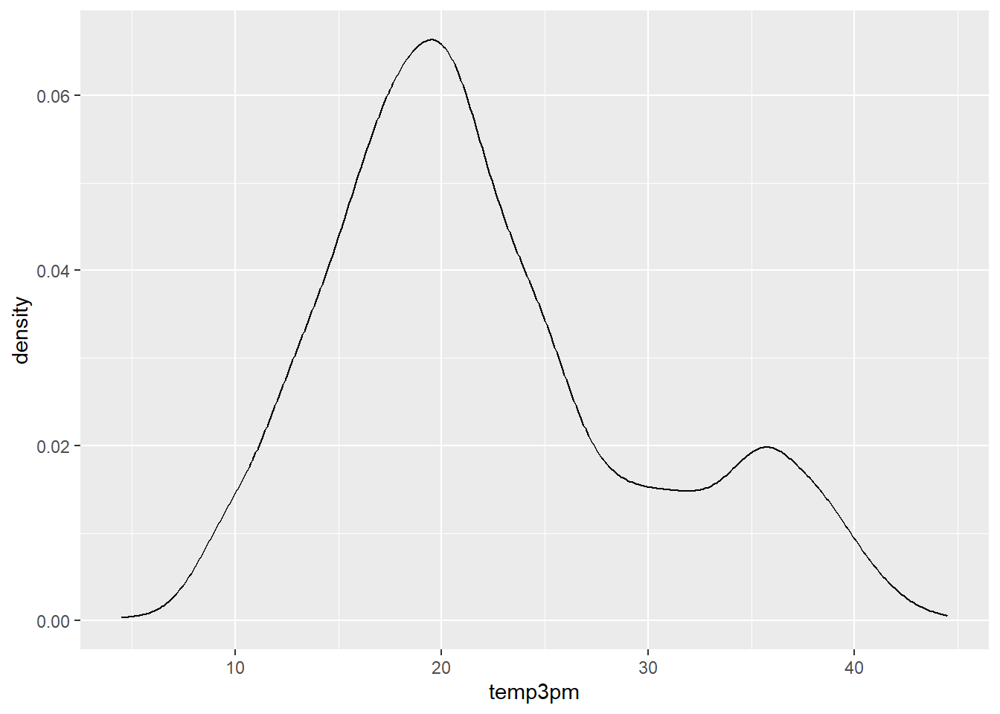
Example 2
How do afternoon temperatures (temp3pm) differ by location?
# plot 2 (no facets or densities)ggplot(weather, aes(x=temp3pm, fill=location))+geom_histogram(color="white")
`stat_bin()` using `bins = 30`. Pick better value with `binwidth`.
Warning: Removed 19 rows containing non-finite outside the scale range
(`stat_bin()`).
Warning: Removed 19 rows containing non-finite outside the scale range
(`stat_bin()`).
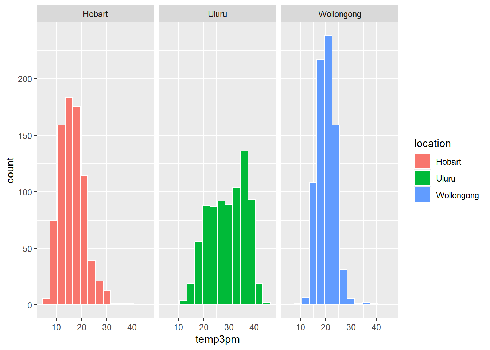
Example 3
# Don't worry about the syntax (we'll learn it soon)woll <- weather |>filter(location =="Wollongong") |>mutate(date =as.Date(date)) # How often does it raintoday?# Fill your geometric layer with the color blue.ggplot(woll, aes(x = raintoday))+geom_bar(fill="blue")
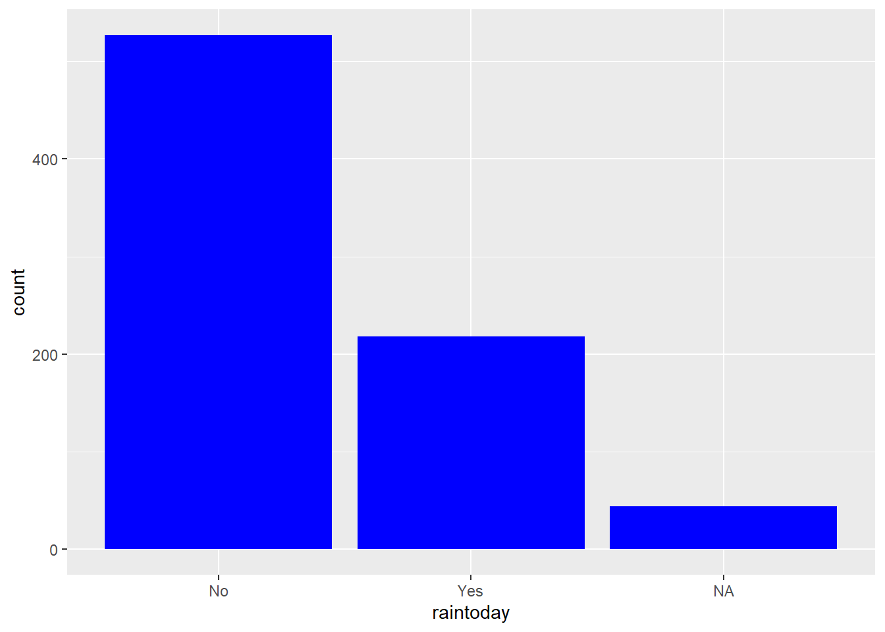
# If it does raintoday, what does this tell us about raintomorrow?# Use your intuition firstggplot(woll, aes(x = raintoday, fill=raintomorrow))+geom_bar(position="fill")
Example 4
# THINK: What variable goes on the y-axis?# For the curve, try adding span = 0.5 to tweak the curvatureggplot(woll, aes(x=date, y=temp3pm))+geom_point()+geom_smooth(span=0.5)
`geom_smooth()` using method = 'loess' and formula = 'y ~ x'
Warning: Removed 18 rows containing non-finite outside the scale range
(`stat_smooth()`).
Warning: Removed 18 rows containing missing values or values outside the scale range
(`geom_point()`).
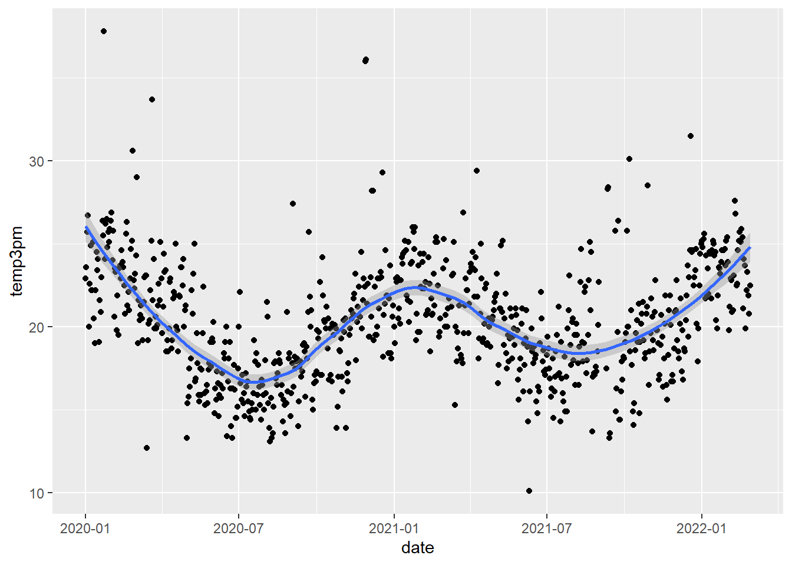
# Instead of a curve that captures the general TREND,# draw a line that illustrates the movement of RAW temperatures from day to day# NOTE: We haven't learned this geom yet! Guess.ggplot(woll, aes(y = temp3pm, x = date))+geom_point()+geom_line()
Warning: Removed 18 rows containing missing values or values outside the scale range
(`geom_point()`).
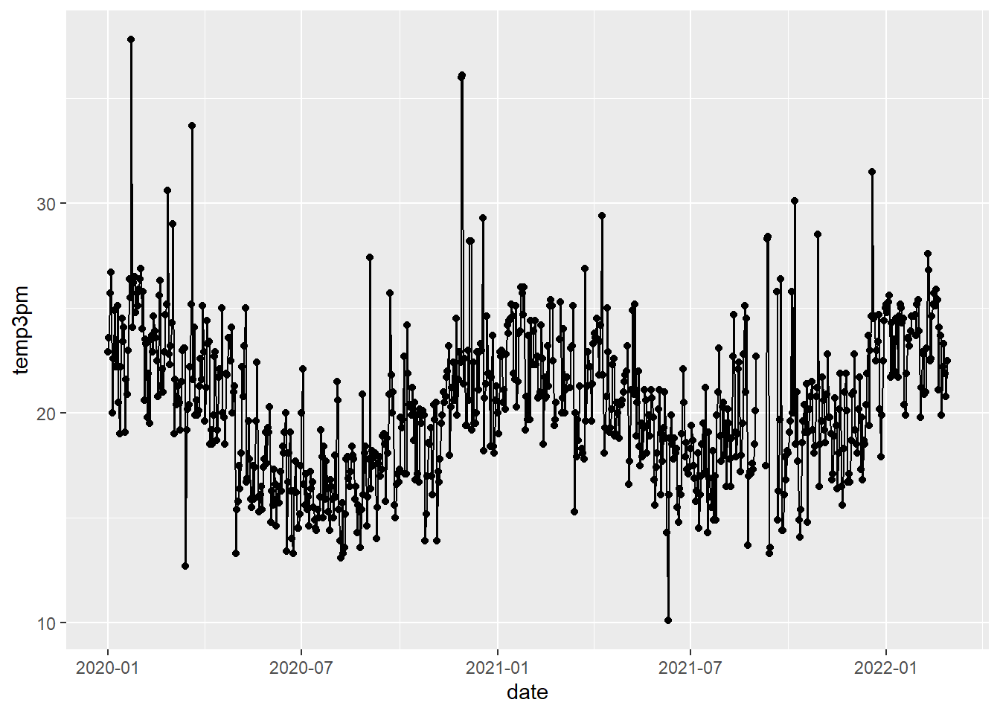
the temperature is higher in January/summer months, but lower in July/winter months
it tends to vary with the seasons in a sinusoidal pattern
some outliers (eg very hot days or very cold days)
Example 5
# Plot temp3pm vs temp9am# Change the code in order to indicate the location to which each data point correspondsggplot(weather, aes(y = temp3pm, x = temp9am, color=location)) +geom_point()
Warning: Removed 27 rows containing missing values or values outside the scale range
(`geom_point()`).
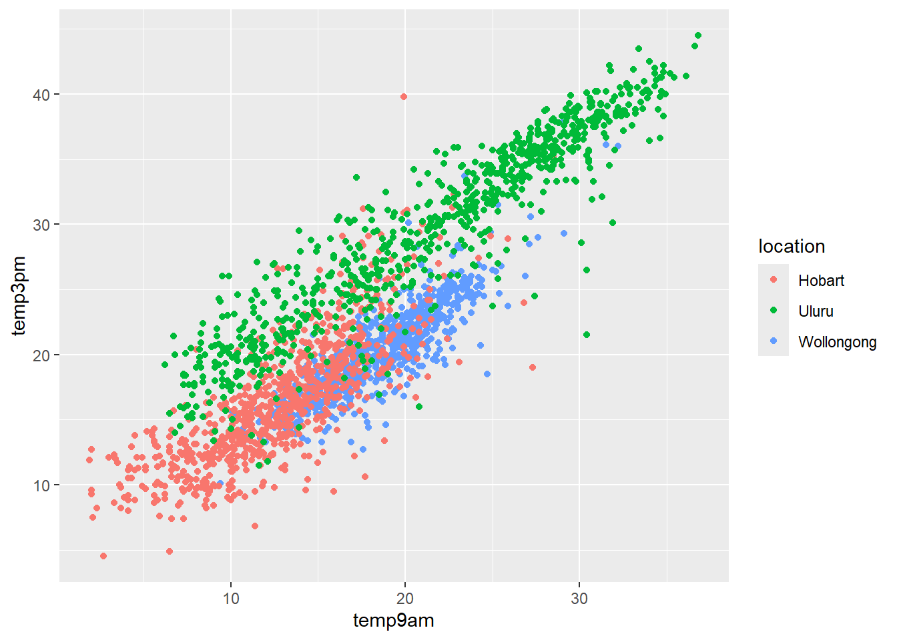
scale_shape_manual(values=c(3,4,2))
<ggproto object: Class ScaleDiscrete, Scale, gg>
aesthetics: shape
axis_order: function
break_info: function
break_positions: function
breaks: waiver
call: call
clone: function
dimension: function
drop: TRUE
expand: waiver
get_breaks: function
get_breaks_minor: function
get_labels: function
get_limits: function
get_transformation: function
guide: legend
is_discrete: function
is_empty: function
labels: waiver
limits: NULL
make_sec_title: function
make_title: function
map: function
map_df: function
n.breaks.cache: NULL
na.translate: TRUE
na.value: NA
name: waiver
palette: function
palette.cache: NULL
position: left
range: environment
rescale: function
reset: function
train: function
train_df: function
transform: function
transform_df: function
super: <ggproto object: Class ScaleDiscrete, Scale, gg>
# Change the code in order to indicate the location to which each data point corresponds# AND identify the days on which it rained / didn't raintodayggplot(weather, aes(y = temp3pm, x = temp9am, color=location, shape=raintoday)) +geom_point()+scale_shape_manual(values=c(1,2))
Warning: Removed 69 rows containing missing values or values outside the scale range
(`geom_point()`).
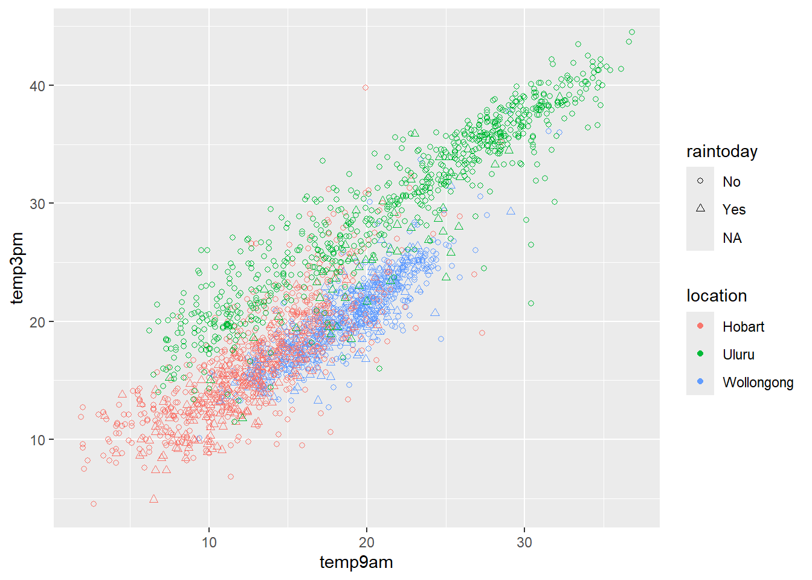
# Change the code in order to construct a line plot of temp3pm vs date for each separate location (no points!)ggplot(weather, aes(y = temp3pm, x = date, color = location)) +geom_line()
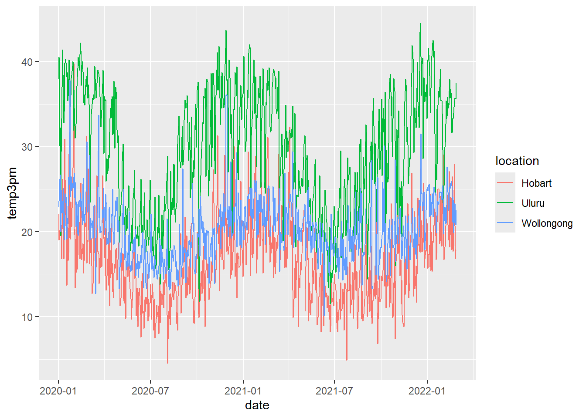
14.1 In-Class Exercises
# Import and check out dataeducation <-read.csv("https://mac-stat.github.io/data/sat.csv")head(education)
Observations * The main peak is around 900, but there is a second, smaller peak near 1050 * range: 800 to 1100 * the mean might be skewed high due to the high outliers, but expected outcome is between 900 and 1000 * states with less poor people have higher scores…
Exercise 2
# Construct a plot of sat vs expend# Include a "best fit linear regression model" (HINT: method = "lm")ggplot(education, aes(x=expend, y=sat))+geom_point()+geom_smooth(method="lm")
`geom_smooth()` using formula = 'y ~ x'
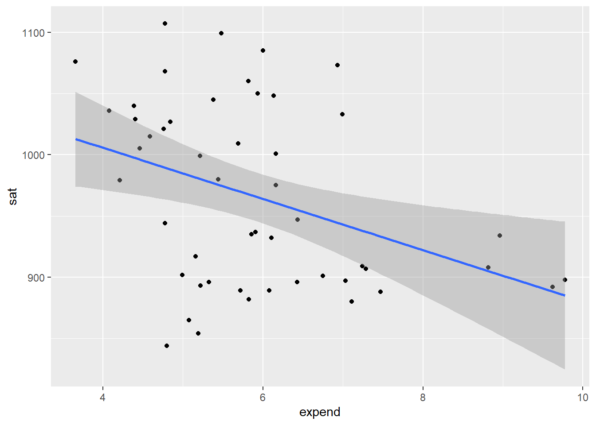
# Construct a plot of sat vs salary# Include a "best fit linear regression model" (HINT: method = "lm")ggplot(education, aes(x=salary, y=sat))+geom_point()+geom_smooth(method="lm")
`geom_smooth()` using formula = 'y ~ x'
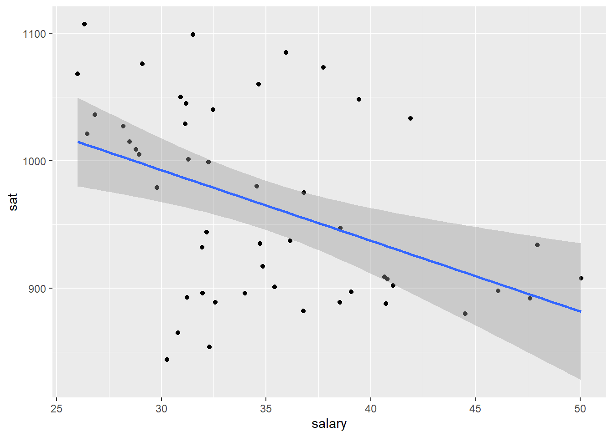
Observations * The relationship between spending (expendature or salary) seems to be negative… * As spending goes up, SAT scores go down (seems counter-intuitive) * However, the relationship doesn’t look very strong
# splits the best-fit line into multiple lines to better fit the data# changing "2" to "3" generates more linesggplot(education, aes(y = sat, x = salary, color =cut(expend, 3))) +geom_point() +geom_smooth(se =FALSE, method ="lm")
`geom_smooth()` using formula = 'y ~ x'
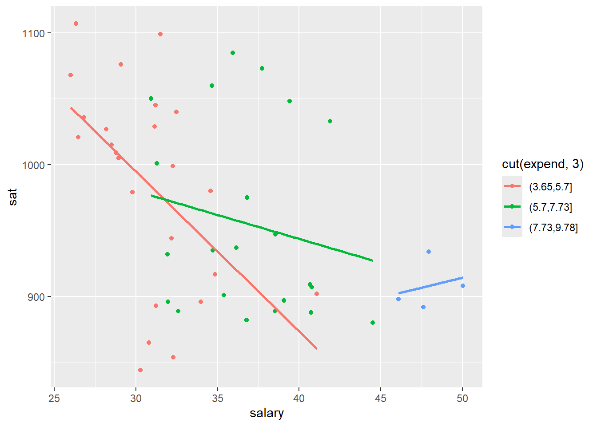
for most of the data, there is a negative relationship between salary and SAT
but, when salary is greater than 45, the relationship is positive. these few points have a higher salary and expenses, but lower SAT scores than states w/ low salary and low spending
states where a lower fraction of students take the SAT have a higher average SAT score (~1050), but states with a greater number of students that take the SAT have a noticiably lower average score (~900)
if less students take the test, it’s probably the best students who take it, which causes the average to go up
if more students take the SAT in a state, the greater number of test-takers causes the average to go down (eg people who are forced to take it and don’t try)
states w/ higher average SAT scores spend the same amount, if not less, than states with lower SAT scores
however, the cluster of points with high SAT scores are all from states with low percentage of students that take the test (0-15%)
when just looking at the blue points (45-100%), as spending increases, SAT score does appear to increase a little bit (the same trend is true within each fraction-SAT score goes up as spending increases)
the high outliers (high SAT, low spending) skew the slope of the best-fit line to be negative
Simpson’s Paradox * Because different states have varying percentages of students that took the SAT, comparing SAT scores and spending shows that as spending increases, SAT score decreases. * The fraction of students that took the test (fracCat) is a confounding variable and skews the data visualization * if not required to take the sat, if a student is behind or struggling in school, they probably wouldn’t take the SAT and wouldn’t bring the average down
14.2 Optional Exercises
Source Code
---title: "Mulivariate Viz"---Use this file for practice with the **mulivariate viz** in-class activity. Refer to the class website for details.## Review {.unnumbered}```{r}library(tidyverse)# Import dataweather <-read.csv("https://mac-stat.github.io/data/weather_3_locations.csv") |>mutate(date =as.Date(date)) # Check out the first 6 rowshead(weather)# What are the units of observation?# weather on a certain date# How many data points do we have? dim(weather)2367*24# What type of variables do we have?str(weather)```### Example 1 {.unnumbered}```{r}ggplot(weather, aes(x=temp3pm))+geom_density()```### Example 2 {.unnumbered}How do afternoon temperatures (`temp3pm`) differ by `location`?```{r}# plot 2 (no facets or densities)ggplot(weather, aes(x=temp3pm, fill=location))+geom_histogram(color="white")# plot 3 (facets)ggplot(weather, aes(x=temp3pm, fill=location))+geom_histogram(color="white",binwidth=3)+facet_wrap(~location)```### Example 3 {.unnumbered}```{r}# Don't worry about the syntax (we'll learn it soon)woll <- weather |>filter(location =="Wollongong") |>mutate(date =as.Date(date)) # How often does it raintoday?# Fill your geometric layer with the color blue.ggplot(woll, aes(x = raintoday))+geom_bar(fill="blue")# If it does raintoday, what does this tell us about raintomorrow?# Use your intuition firstggplot(woll, aes(x = raintoday, fill=raintomorrow))+geom_bar(position="fill") ```### Example 4 {.unnumbered}```{r}# THINK: What variable goes on the y-axis?# For the curve, try adding span = 0.5 to tweak the curvatureggplot(woll, aes(x=date, y=temp3pm))+geom_point()+geom_smooth(span=0.5)# Instead of a curve that captures the general TREND,# draw a line that illustrates the movement of RAW temperatures from day to day# NOTE: We haven't learned this geom yet! Guess.ggplot(woll, aes(y = temp3pm, x = date))+geom_point()+geom_line()```* the temperature is higher in January/summer months, but lower in July/winter months* it tends to vary with the seasons in a sinusoidal pattern* some outliers (eg very hot days or very cold days)### Example 5 {.unnumbered}```{r}# Plot temp3pm vs temp9am# Change the code in order to indicate the location to which each data point correspondsggplot(weather, aes(y = temp3pm, x = temp9am, color=location)) +geom_point()scale_shape_manual(values=c(3,4,2))# Change the code in order to indicate the location to which each data point corresponds# AND identify the days on which it rained / didn't raintodayggplot(weather, aes(y = temp3pm, x = temp9am, color=location, shape=raintoday)) +geom_point()+scale_shape_manual(values=c(1,2))``````{r}# Change the code in order to construct a line plot of temp3pm vs date for each separate location (no points!)ggplot(weather, aes(y = temp3pm, x = date, color = location)) +geom_line()```## In-Class Exercises```{r}# Import and check out dataeducation <-read.csv("https://mac-stat.github.io/data/sat.csv")head(education)library(tidyverse)```### Exercise 1 {.unnumbered}```{r}ggplot(education, aes(x=sat))+geom_density()```**Observations*** The main peak is around 900, but there is a second, smaller peak near 1050* range: 800 to 1100* the mean might be skewed high due to the high outliers, but expected outcome is between 900 and 1000* states with less poor people have higher scores...### Exercise 2 {.unnumbered}```{r}# Construct a plot of sat vs expend# Include a "best fit linear regression model" (HINT: method = "lm")ggplot(education, aes(x=expend, y=sat))+geom_point()+geom_smooth(method="lm")# Construct a plot of sat vs salary# Include a "best fit linear regression model" (HINT: method = "lm")ggplot(education, aes(x=salary, y=sat))+geom_point()+geom_smooth(method="lm")```**Observations*** The relationship between spending (expendature or salary) seems to be negative...* As spending goes up, SAT scores go down (seems counter-intuitive)* However, the relationship doesn't look very strong### Exercise 3 {.unnumbered}```{r}ggplot(education, aes(x=salary, y=sat, color=expend))+geom_point()```### Exercise 4 {.unnumberd}```{r}# splits the best-fit line into multiple lines to better fit the data# changing "2" to "3" generates more linesggplot(education, aes(y = sat, x = salary, color =cut(expend, 3))) +geom_point() +geom_smooth(se =FALSE, method ="lm")```* for most of the data, there is a negative relationship between salary and SAT* but, when salary is greater than 45, the relationship is positive. these few points have a higher salary and expenses, but lower SAT scores than states w/ low salary and low spending### Exercise 5 {.unnumbered}```{r}ggplot(education, aes(x=fracCat))+geom_bar()``````{r}ggplot(education, aes(x=sat, fill=fracCat))+geom_density(alpha=0.7)+facet_wrap(~fracCat)```* states where a lower fraction of students take the SAT have a higher average SAT score (~1050), but states with a greater number of students that take the SAT have a noticiably lower average score (~900)* if less students take the test, it's probably the best students who take it, which causes the average to go up* if more students take the SAT in a state, the greater number of test-takers causes the average to go down (eg people who are forced to take it and don't try)```{r}ggplot(education, aes(x=expend, y=sat, color=fracCat))+geom_point()+geom_smooth(method="lm")```* states w/ higher average SAT scores spend the same amount, if not less, than states with lower SAT scores* however, the cluster of points with high SAT scores are all from states with low percentage of students that take the test (0-15%)* when just looking at the blue points (45-100%), as spending increases, SAT score does appear to increase a little bit (the same trend is true within each fraction-SAT score goes up as spending increases)* the high outliers (high SAT, low spending) skew the slope of the best-fit line to be negative **Simpson's Paradox*** Because different states have varying percentages of students that took the SAT, comparing SAT scores and spending shows that as spending increases, SAT score decreases.* The fraction of students that took the test (fracCat) is a confounding variable and skews the data visualization* if not required to take the sat, if a student is behind or struggling in school, they probably wouldn't take the SAT and wouldn't bring the average down## Optional Exercises